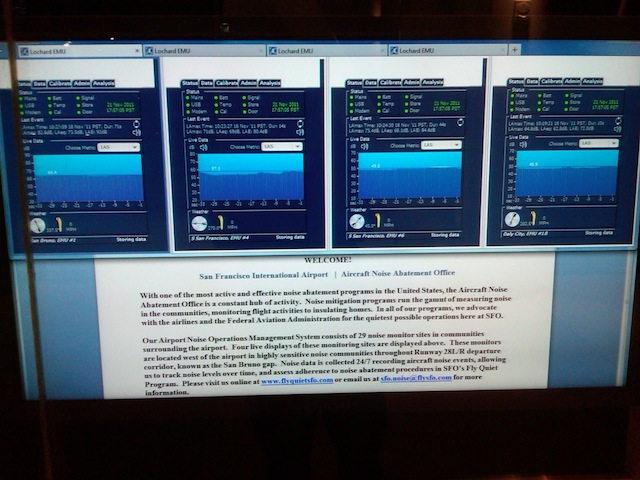
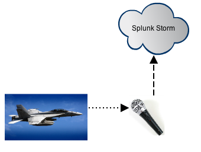
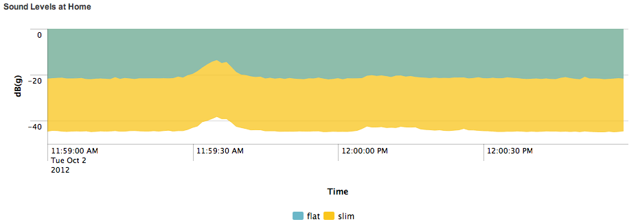
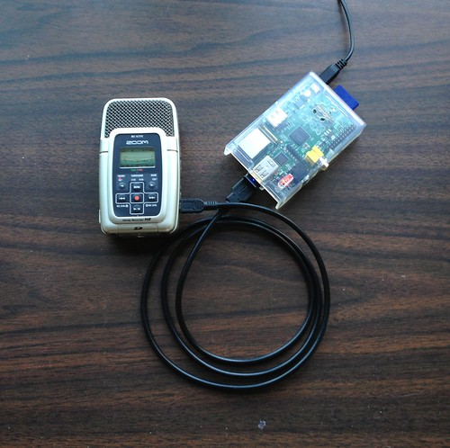
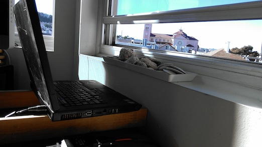
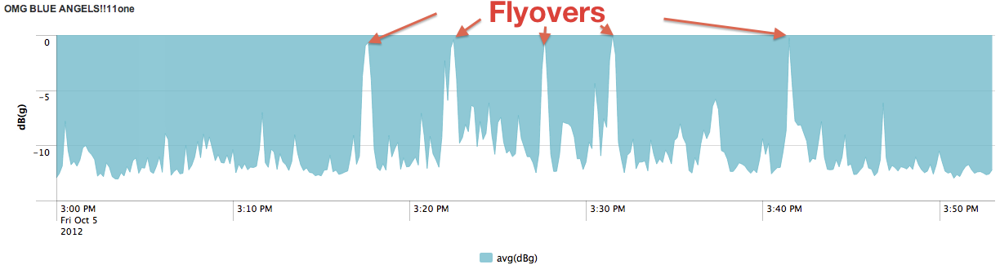
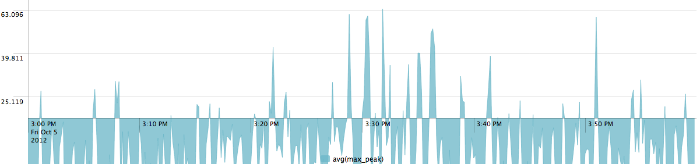
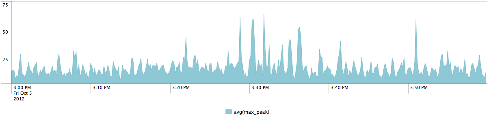
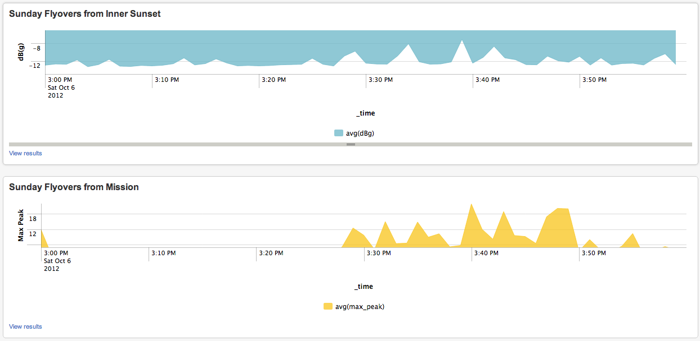
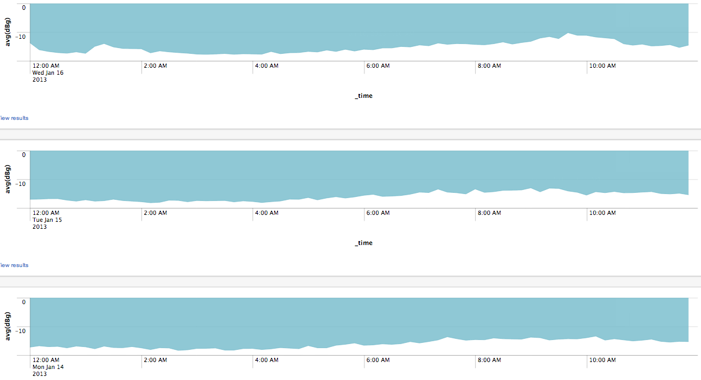

This article describes a distributed noise pollution detection system built using Commercial Off-The-Shelf (COTS) hardware and Splunk Storm. The system was used to detect the fly-overs of F-18 fighter jets during San Francisco's annual Fleet Week Celebration and Air Show.
Every October San Francisco hosts Fleet Week, a celebration of the United State's military services. The week includes public events, tours and demonstrations - culminating in a weekend air-show featuring the US Navy Blue Angels air-acrobat fighter jets. For the week prior to the air-show the city air-space is inundated with the sound of the Blue Angels F-18's performing practice maneuvers. These screamingly loud fly-overs do not go unnoticed by the twitterverse:
Welcome back to San Francisco @blueangels - you are the highlight of the year and we love to see you flying by our windows at Embarcadero 4.
— Eat My Words (@eatmywords) October 4, 2012
Inspired by Stanford's Quake Catcher Network and UC Berkeley's SETI@Home citizen-science programs, we decided to see if we could build a system to detect noise pollution in the city, namely the noise pollution created by F-18's flying over our houses. Using distributed monitors to detect aircraft noise is nothing new, as San Francisco's very own airport was the first to institute an Aircraft Noise Abatement Program. SFO's system detects, predicts and models aircraft noise - specifically it's effect on local communities. If a system exists to detect commercial aircraft noise, surely we could build a system to detect unabated fighter jet noise.

Similar to the QCN and SETI@Home projects, this project would need to be built using resources found in a typical household, using Commercial Off-The-Shelf (COTS) equipment. Additionally, the engineers working on this project were all working for Splunk at the time, so we would utilize our own data analytics service Splunk Storm for data collection and representation.
A word about Splunk: Splunk is the 'Engine for Machine Data', allowing anyone to capture, index and analyze data from any source, regardless of format, structure, or content. This makes Splunk the perfect tool for collecting data from disparate systems. Normally enterprises install Splunk centrally, utilizing syslog or Splunk's own Universal Forwarder to collect and aggregate data for analysis. Last year Splunk launched a SaaS version of their product called Splunk Storm, allowing users to send data from anywhere to a cloud-based service and perform the same analysts, again, regardless of the data's structure.
Splunk Storm's distributed nature would allow central collection & analysis of readings from multiple physical locations. We'll use this to collect sound level data for our 'Blue Angles' detection project.

To collect the sound levels we decided to go with the simplest possible solution using COTS equipment, thus avoiding expensive specialized recording equipment. Luckily each of our recording sites came with pre-existing sound capture and data collection devices: our laptops and their built-in microphones. We would periodically record the sound level with our laptops and log the data to Splunk Storm.
To detect the sound of a Blue Angels fly-over we would first need to determine our normal background noise level. We plotted our diurnal noise levels in all locations to locally calibrate our microphone gains. From there we would need a baseline signal that we would be able to detect in all monitoring locations. Luckily the City of San Francisco provides this for free with it's weekly Tuesday city-wide Siren test at Noon:

We had initially planned to triangulate the sound source using three different physical locations around San Francisco. Unfortunately our third listening station on Alameda Island was too far off to pickup any discernible sound difference. Our two remaining stations were on Gurerro & 16th in San Francisco's Mission District, and Judah & 10th in San Francisco's Inner Sunset District.


Two methods of data recording were attempted for this project.
The Mission Listening Station used periodic readings of Peak Envelope as heard by the microphone:
1349921818.185662 max_peak=0
The Inner Sunset Listening Station used constant readings of dB levels as heard by the microphone:
2012-10-08 11:33:41,655 log_src=slim CHANNELS=1 RATE=8000 MAX_AMPLITUDE=32767 rms=3510 max=9443 amplitude=0.288186 dBg=-10.806534
The following graph shows 4 flyovers of the Blue Angels during a test-run over the city on Friday October 5th from 3PM to 4PM at the Inner Sunset listening station:

This graph shows the same flyovers from the Mission listening station: 


In addition to detecting Blue Angels fly-overs, these listening stations have been used to detect diurnal noise patterns. The following are noise levels for mornings from 12 midnight to 12 noon during the week of January 14th.

Source for the scripts that captured and transmitted noise-level are available here: https://github.com/ampledata/sounding
This project was developed by: